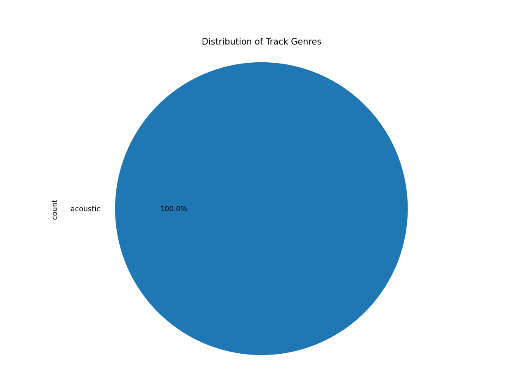

Introduction
The analysis of the Spotify track dataset using Python’s Pandas, Matplotlib, and Seaborn libraries provided insights into the characteristics of tracks, genres, and their popularity. The data exploration uncovered patterns related to track genres, danceability, energy, duration, and popularity...
1. Distribution of Track Genres

The pie chart illustrates the relative proportions of various track genres in the dataset. Some genres like acoustic, pop, and rock dominate the dataset, while more niche genres like classical or metal occupy a smaller share...
2. Relationship Between Popularity and Danceability
This scatter plot visualizes the relationship between a track's danceability and its popularity. While there is no strong correlation, certain clusters suggest that tracks with higher danceability tend to have moderate to high popularity...
3. Energy Distribution by Genre
The box plot compares the energy levels across different music genres. Genres such as rock, electronic, and pop exhibit higher energy levels, while genres like acoustic and classical generally show lower energy levels...
4. Duration of Tracks
This histogram shows the distribution of track durations. Most tracks fall within the range of 3 to 5 minutes, aligning with industry standards...
5. Genre-Specific Characteristics
The combination of different visualizations reveals some genre-specific characteristics. Acoustic tracks generally have low energy levels, while electronic and pop tracks tend to be more energetic and danceable...
Conclusion
This analysis of the Spotify track dataset revealed valuable insights into how different attributes like genre, energy, danceability, and popularity interrelate. The visualizations helped uncover trends that could be useful for artists, producers, and playlist curators...